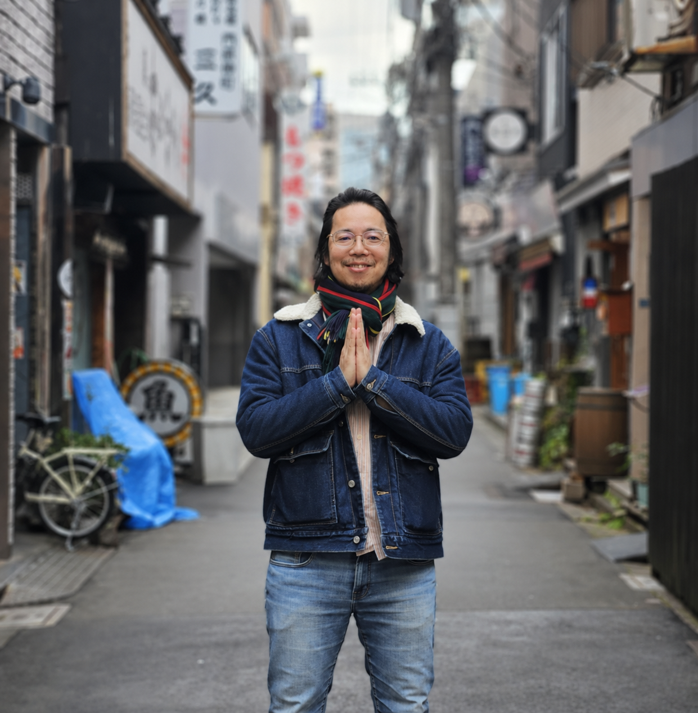

著者にギフト
受け取ったギフトは、ひとりの手の中にとどまりません。あなたから著者へ、著者からまた誰かへ——めぐっていきます。よかったら、その循環の一端になってもらえたら嬉しいです。＾＾
いただいたギフトは、こう巡ります
世界へ、めぐる
いま、声をかけていただけそうな場所たち。あなたの応援が、ここでのお話会のはじまりになります。
ギフトの方法は、2つ
毎月のささやかなギフトで、企画やお話会の「続けていく力」になります。コミュニティで、めぐりの様子もお届けします。
月額コミュニティを見る →「今、贈りたい」というその気持ちのままに。下記の口座へ、無理のない範囲でどうぞ。
受け取りましたら、ご一報いただけると「ありがとう」を伝えられるので嬉しいです＾＾。
受け取った人たちの声
弘さんからギフトを受け取った方が、その後どんな気持ちになり、何が動いたのか。少しだけ、おすそわけ。＾＾
本づくりに参加する機会をもらったのに、行動が伴わず申し訳なくて。それでも週一回のzoomを、弘さんはずっと続けてくれました。「本になるまで見守る」——見守って応援する自分の存在も、ちゃんとギフトなんだと思えるように。弘さんは、どんな場面でも『何がギフトできるかな？』とチャンスを逃さない、ギフトに生きる達人です。まずは本を読んでほしい。『世界のみんなでノーベル平和賞をとる』という夢を、読書で応援してもらえたら嬉しいです。
自分の道を模索していた時に、石丸さんがぴったりの方と活動をシェアしてくれて、活路が見いだされた感じがしました。今まさに必要としていたから届けてくれた——運命めいたものを感じます。楽しく遊んで、出会いと感謝が巡っていく。これからの生き方を体現してくれている人です。
協働研究者を探していた時に繋いでもらえて、人生で最も幸福な気持ちになりました。愛とギフトに強く惹かれました。弘さんは、幸福の種を地球に撮く宇宙人。受け取った豊かさを、周りにもギフトしていきたいです。
弘さんは、とにかく「遊び」という言葉をよく使う人。その言葉に何度も背中を押されて、仕事でも『もっと遊んでいい』と思えるようになりました。プロとしての厳しさとも共存できています。私にとっては、最高の遊び仲間です！
くるしい時に、優しさベースの安心感やごはんを受け取って、ありがたかった。びっくり→ありがたい→しあわせ。気づけば私も似たことをギフトするように。さりげない優しさがたくさんの、命の恩人です！
お話する時間そのものがギフトでした。最初は「申し訳ないな」が出てきたけれど、今は素直に「ありがとう」と、「どう誰かに還元できるだろう」と感じられるように。今はゲストハウスで循環に取り組んでいます。
右も左もわからない心細い時に支えてもらい、驚きとありがたさでいっぱいでした。何もかもがギフトだと思えるようになって、つらい出来事もあたたかく見られるように。風のように軽やかで、いつも優しく見守ってくれる、心の師匠です。
人生絶望の中で受け取りました。弘さんは「受け取ってくれたら僕が嬉しい」と、与える喜びを表現してくれて、心置きなく純粋に喜べました。今は、与えることも受け取ることもすべてがギフトで愛だという視点を持てるように。神様で、師匠で、仲間で——いちばんしっくりくるのは、恩師でありアミーゴです！
「とりあえず話を聞くよ」と、定期的に話を聞いてくれました。最初は気楽になれてありがたく、途中は申し訳なさも。でも感謝でとらえ直してから、恩返しや循環を探す視点に変わりました。先日はAIで自分でKindle出版する方法を、弘ちゃんと一緒に楽しくつくれて。これを受け取って本を出す人が生まれたら、循環がまた一つ。出会って15年、変わらないスタンス。私にとって弘ちゃんは、ギフトの人です。
世界に傷つき、信頼感をなくしていた頃。「こんな世界観、本当に無料でいいの？」と半信半疑で受け取りました。でも相手に負担にならないギフトの仕方で、私の気持ちを最重要視してくれて。今は私も、セッションや書を前より高まった愛の気持ちでギフトするように。私にとって弘さんは、安心の素です。
人生がつまらなく窮屈だった頃。「何かお返ししなくちゃ」と葛藤したけれど、生きてるだけでギフトを少しずつ受け取れるように。私がそうなったら、子どもたちも楽そうに。お友達にツールの使い方をギフトしたら、とても喜ばれました。尊い活動なのに、驚くほど自然体な人です。
※ みなさんの5つの質問への「全文」は、「ギフトに生きるとは」のページで読めます。声をくださったみなさん、ありがとうございます。＾＾
動画で、もっと知る
「ギフトに生きる」のこと、そして僕自身のこと。さまざまな方がインタビューしてくれた対話を、そのままおすそわけします。気になるものから、どうぞ。＾＾
あなたが贈ってくれたギフトは、
めぐって、めぐって、
きっとまた、誰かのもとへ。
— 受け取らせてもらえること自体が、僕にとってのギフトです。ありがとう。＾＾